De patria a patria
Un viaje épico de Kentucky a Burundi pasando por Gales y Ucrania
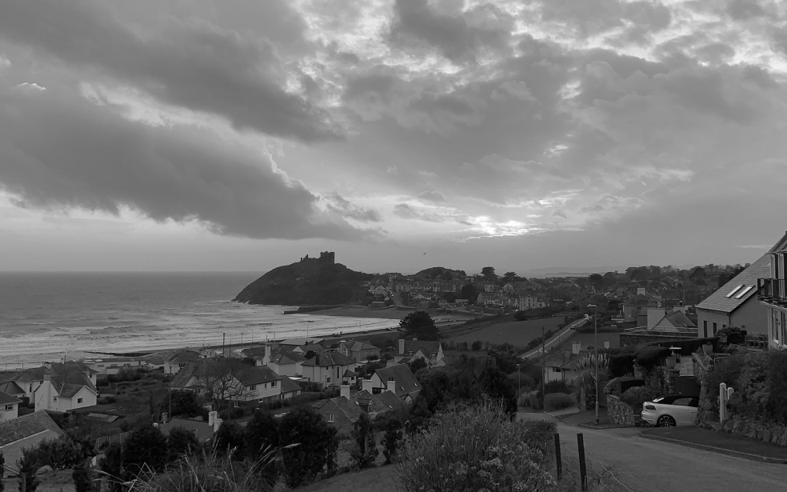
Conoce un poco mejor los lugares de los que proceden tus colegas en línea
Cada pessoa é um artista livre, chamado a transformar as condições, pensamentos e estruturas que moldam nossas vidas.
— Joseph Beuys
La ciudad de TripleTen ha reunido a profesionales de diferentes rincones del mundo. Hoy, la Galería de Arte TripleTen se enorgullece de presentar historias y fotografías de algunas de las personas que dedican su tiempo y esfuerzo a hacer que los futuros profesionales de la tecnología de esta ciudad se sientan como en casa. Cada uno de nosotros tiene una historia única sobre el lugar del que procede. No dudes en añadir a nuestra colección tu propia historia y una obra de arte visual dedicada a tu ciudad natal. No importa de dónde seas, nos alegra que seas nuestro vecino.
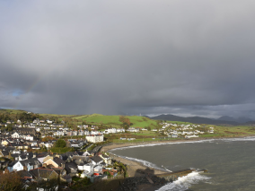
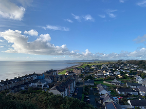
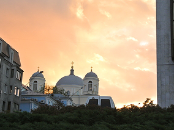
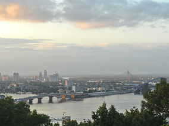
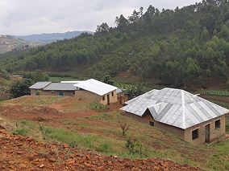
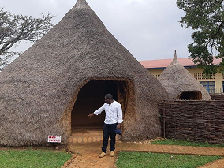
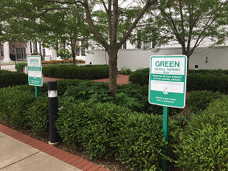
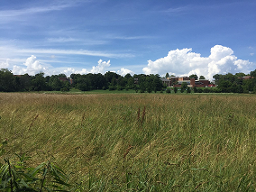
Cricieth, Gales
Artistas
Steffan Warren, editor jefe
Kseniya Glagoleva, gerente de proyectos
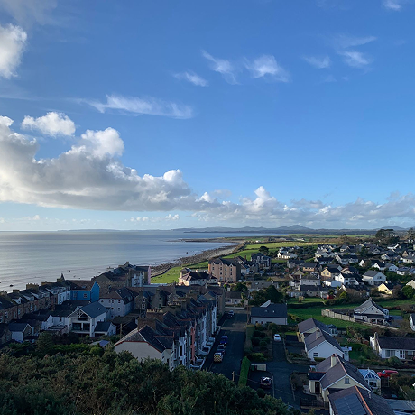
Las ruinas medievales del castillo de Cricieth dominan la ciudad desde una roca
que extiende sobre el mar. Se cree que fue construido por Llewelyn el Grande en el S. XIII. 800 años
después, la autodenominada Perla de Gales en las costas de Snowdonia, se ha convertido en un popular
destino turístico durante los meses de verano.
A pocos pasos de camino al castillo, puedes disfrutar de los mejores helados del mundo en Cadwalader's,
cuyo ingrediente secreto se rumorea que son algas marinas de la localidad. Otra cosa por la que es famosa
Cricieth es por haber ganado el premio *Gales en flor* durante cinco años seguidos por sus espectaculares
muestras florales alrededor de la ciudad. También vio nacer a David Lloyd George, el único galés que ha
sido Primer Ministro del Reino Unido.
Compra esta obra como NFT
Berea, EE. UU.
Artistas
Travis Turner, autor y editor
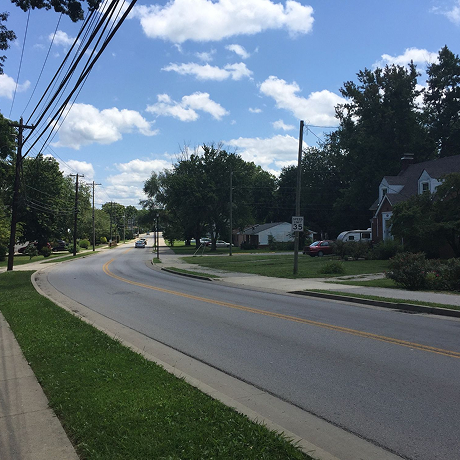
Berea es una pequeña ciudad ubicada en la parte central de Kentucky. La ciudad está rodeada por hermosos
bosques y campos. Es conocida como la capital de la artesanía del estado, y sus visitantes hallarán
infinitas posibilidades para ir de compras: tiendas de joyas, velas y artículos de madera artesanales;
galerías, talleres de vidrio y más. La ciudad celebra un festival anual que rinde tributo al "spoonbread",
un platillo local hecho de pan de maíz y que se sirve con una cuchara de madera.
Aunque, probablemente es mejor conocida por su universidad. El Berea College fue fundado en 1855 y fue la
primera universidad sureña integrada racialmente, así como la primera en ser coeducacional. Algo que en
cierta manera la hace única, es que no cobra colegiatura: cada estudiante recibe una beca del 100%.
Compra esta obra como NFT
Muramvya, Burundi
Artistas
Grevisse Kenguruka, editor técnico
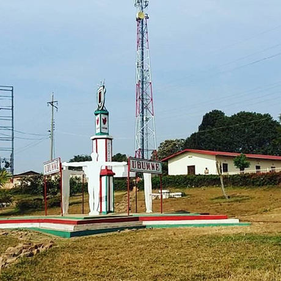
Muramvya es una de las 18 provincias de Burundi. Durante la época del reino, Muramvya fue su capital; y en
2017, gracias a su paisaje cultural y natural, se añadió a la Lista provisional de patrimonio mundial de la
UNESCO. Se encuentra ubicada en el centro de Burundi, entre las capitales política y económica del país.
Su clima es más bien frío durante la noche, pero durante el día, podrías pensar que estás en el paraíso. A
sus 2,665 metros (8,743 ft) sobre el nivel del mar, el Monte Teza es uno de los lugares más fríos de la
provincia. Pero es justo esa brisa fresca la que da pie a una de las más grandes plantaciones de té y café
del país, y que representa la mayoría de las exportaciones de Burundi.
El Parque nacional de Kibira, una de las mayores reservas de vida silvestre para los simios, ocupa parte de
cuatro provincias, incluyendo Muramvya. Este parque nacional se encuentra en las cúspides de las hermosas
montañas de la Divisoria Congo-Nilo, cuyas alturas oscilan entre 1,550 y 2,660 metros. Está lleno de hermosa
vegetación, y es una fuente para los diversos ríos y arroyos que proporcionan agua alrededor del país.
Compra esta obra como NFT
Tecámac, México
Artistas
Jahir Salgado, editor técnico y desarrollo web
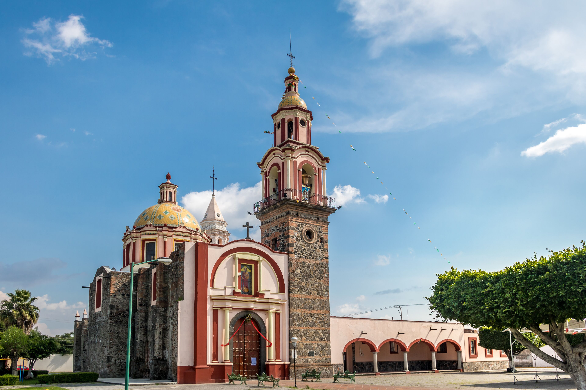
El municipio de Tecámac es un municipio mexicano que pertenece al Estado de México.
Es un municipio que tiene orígenes prehispánicos, pues fue fundado en 1202 por los mexicas en su
peregrinación hacia la creación de la gran Ciudad de México-Tenochtitlán.
En las últimas dos décadas, el crecimiento poblacional de Tecámac se tornó realmente dramático. Si se hace
una proyección fundada en un cálculo realista, dada la cantidad de unidades habitacionales que se construyen
a la fecha en el municipio, la población municipal se habrá triplicado en este lapso: de 123 mil habitantes
que había en 1990 a cerca de 360 mil en 2010.
Compra esta obra como NFT